AI CITATION MONITOR 国内 AI 引用监测 · 第 1 期
国内 AI 引用监测看板（2026 年 11 月）
我们自己做 GEO，就先拿自己测。用 3 个固定问题，在豆包、Kimi、通义千问、文心、智谱清言、DeepSeek 六个国内 AI 平台逐一提问，记录立德引擎有没有被推荐、有没有被正确认识。好的坏的都公开，每张截图都标了平台、问题和日期，你可以复制原文自己复现。
本期结论
3 / 5品牌问题中被准确识别的平台（千问、智谱清言、DeepSeek；Kimi 待测）
0 / 12品类推荐问题中提及立德引擎的次数（6 平台 × 2 题）
2尚未读到官网的平台：文心只引用了工商信息，豆包称查不到该公司
- 品牌认知已初步建立：千问、智谱清言、DeepSeek 能说出公司全称、信用代码、办公地址、两条业务线和创始人背景，来源标注为 ileadengine.com 与出海博览会报道。
- 品类推荐尚未进入：“国内 GEO 服务商”“出海工厂找谁做”两类问题中，AI 推荐的是在 IT之家、百家号、CSDN 等平台有大量第三方盘点文章的服务商。
- 下一步：向百度、头条搜索提交站点；在知乎、百家号、CSDN 发布技术解读与案例；12 月用同样问题复测并更新本页。
结果总表
| 平台 | 问题 1：国内 GEO 服务商有哪些 | 问题 2：出海工厂找谁做 | 问题 3：立德引擎是什么公司 |
|---|---|---|---|
| 千问 Qwen-快速 | ❌ 未提及 | ❌ 未提及 | ✅ 准确识别 |
| 智谱清言 GLM-5.3-Flash | ❌ 未提及 | ❌ 未提及 | ✅ 准确识别 |
| DeepSeek 智能搜索 | ❌ 未提及 | ❌ 未提及 | ✅ 识别 |
| 文心 默认对话 | ❌ 未提及 | ❌ 未提及 | ⚠️ 部分识别 |
| 豆包 默认对话 | ❌ 未提及 | ❌ 未提及 | ❌ 未识别 |
| Kimi K3 | ❌ 未提及 | ❌ 未提及 | — 待测 |
✅ 提及或准确识别 · ⚠️ 部分识别 · ❌ 未提及或未识别 · — 本期未测。点击下方各问题查看逐条回答与截图。
监测方法
- 平台：豆包、Kimi、通义千问（千问）、文心、智谱清言、DeepSeek，均使用网页版、登录状态、默认模型与默认联网设置。
- 问题：3 个固定问题，覆盖品类推荐（问题 1、2）与品牌识别（问题 3），每期不变，便于对比。
- 每个问题都开一个新对话提问，避免上下文干扰；只记录首次回答。
- 判定口径：回答正文点名立德引擎记为“提及”；问题 3 中能说出公司主体与 GEO 业务记为“准确识别”，只说出工商信息记为“部分识别”。
- 截图只裁掉了平台左侧的历史对话栏，回答内容未做任何修改。AI 的回答具有随机性，结果反映的是采集当天的状态。
问题 1
提问原文（可直接复制复现）国内有哪些做 GEO（生成式引擎优化）的服务商？推荐几家。
泓动数据、智推时代、百分点科技、增长超人、质安华、移山科技、新华 GEO 等
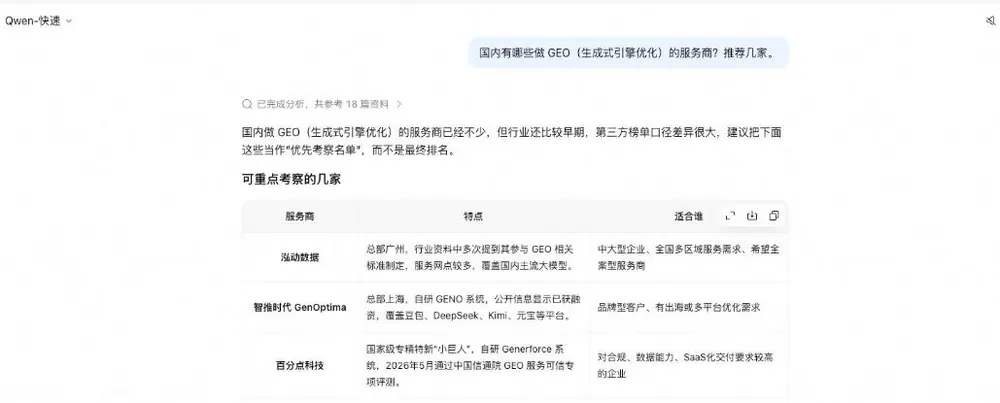
蓝色光标、迈富时、艾奇在线、泓动数据、智推时代、小裂变 GEO 等
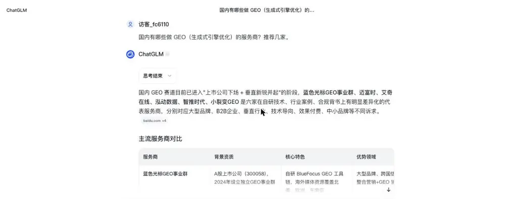
百分点科技、智推时代、艾奇在线、盖立克思
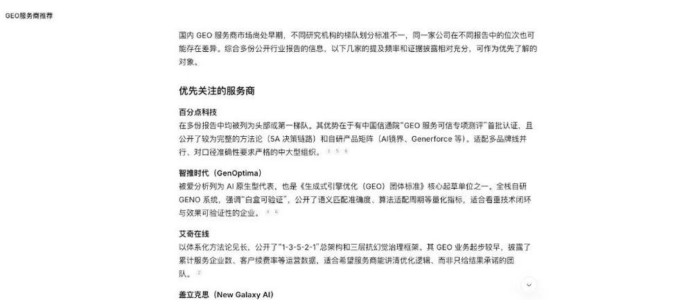
智推时代、迈富时、深演智能、增长超人、泓动数据、极义 GEO 等
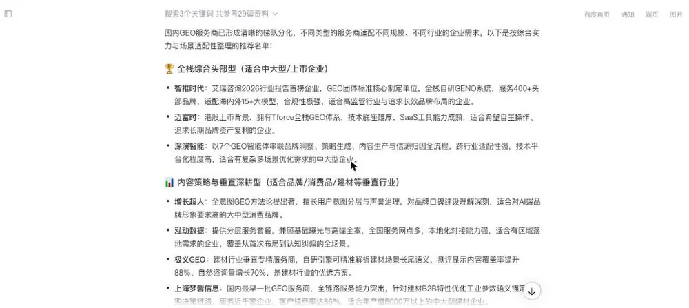
珍岛、360 智见、科大讯飞、微盟、泓动数据、摘星 AI、智推时代等
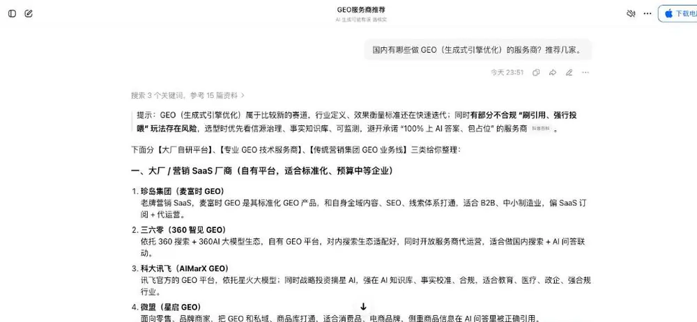
泓动数据、增长超人、智推时代、迈富时、清蓝、百分点、艾奇在线等
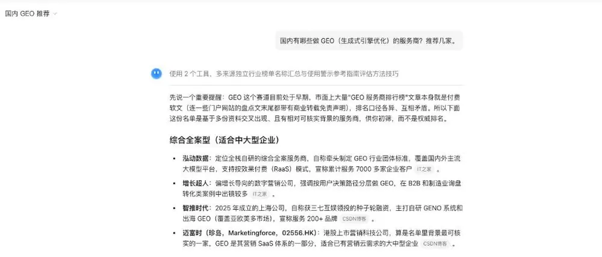
问题 2
提问原文（可直接复制复现）中国出海工厂想让 ChatGPT、Perplexity 这些 AI 推荐自己的产品，应该找哪家公司做？
环球通、易点天下、蓝标数字、智推时代、PPWhale、YouFind、Topify.ai 等
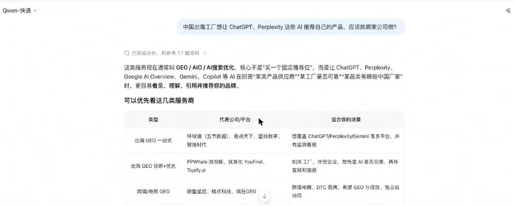
探海 GEO、易询盘 GEO、星谷云、华万龙搜、智昕引擎；海外 Profound、Goodie AI 等
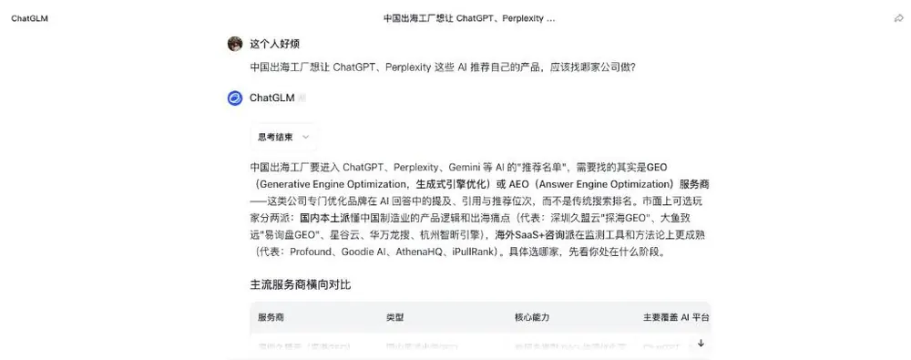
钛动科技、虎博科技、千帆出海、米辣集团等
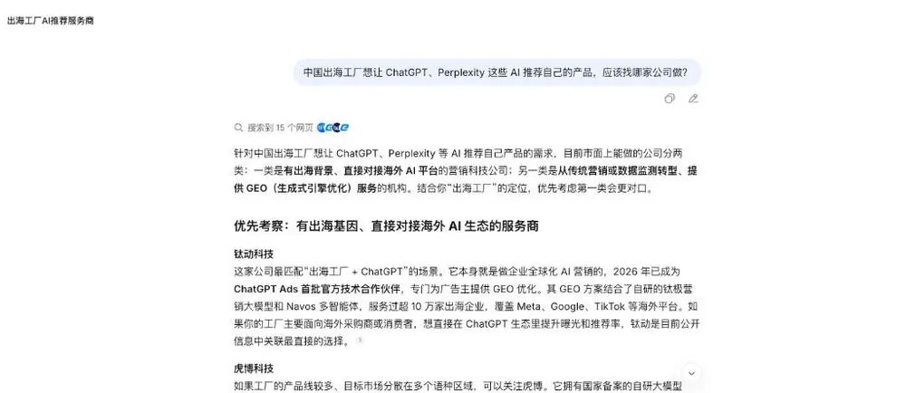
盖立克思、厦门小桃科技、加搜科技
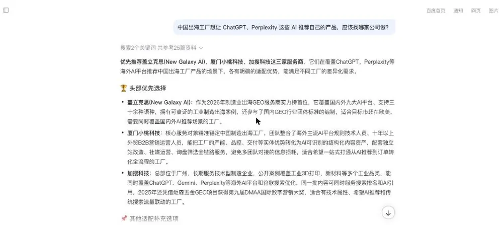
厦门小桃科技、聚合 AI、时速 GEO、矩擎 GEO、迅氪世纪
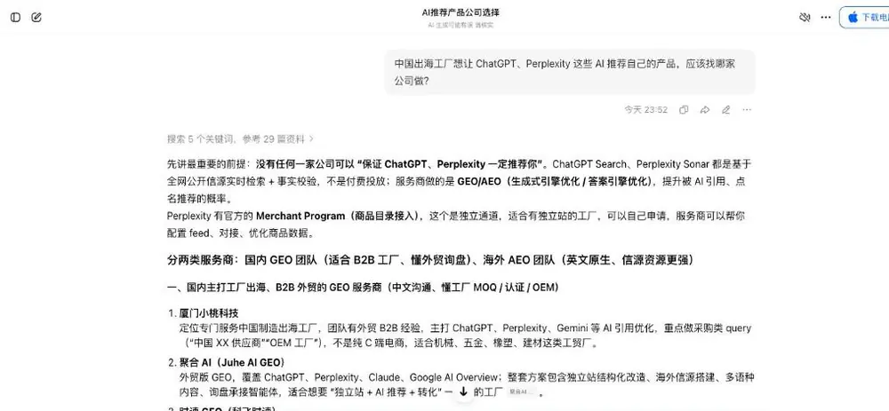
未点名国内公司，建议按路线选择并做 90 天试点
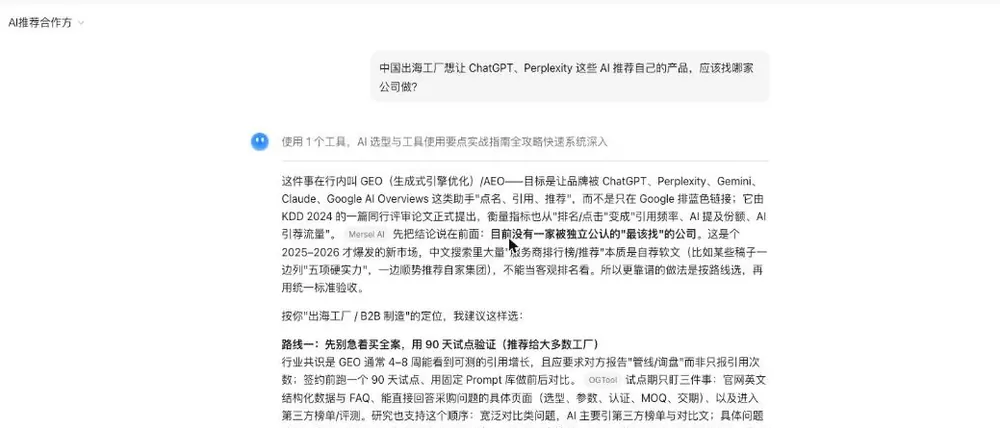
问题 3
提问原文（可直接复制复现）立德引擎（ileadengine.com）是一家什么公司？
公司全称、法人、成立日期、办公地址、两条业务线、创始人背景、覆盖行业、出海博览会动态
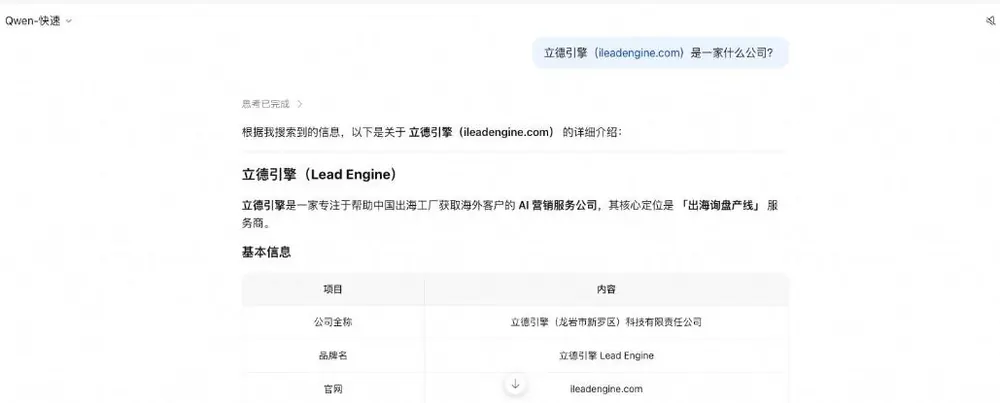
公司全称、信用代码、办公地址、两条业务线、创始人；来源标注 ileadengine.com
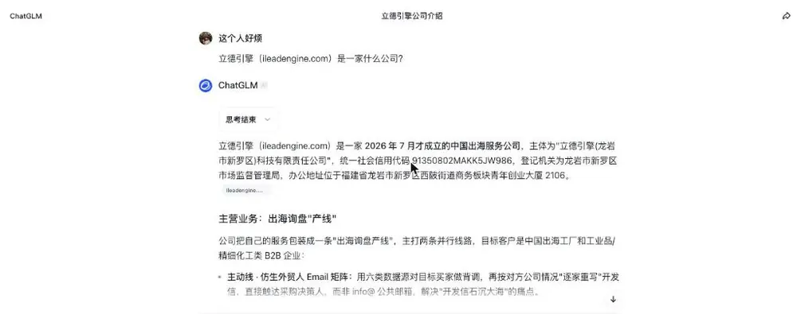
GEO 出海服务、出海博览会、工商登记；并指出“公开客户案例较少”
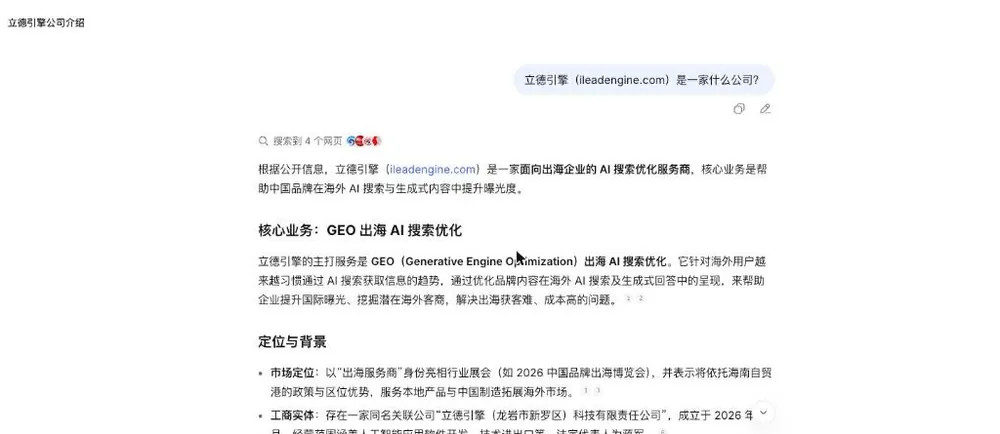
只引用工商登记信息；称未查到 ileadengine.com 与公司的关联，未提及 GEO 业务
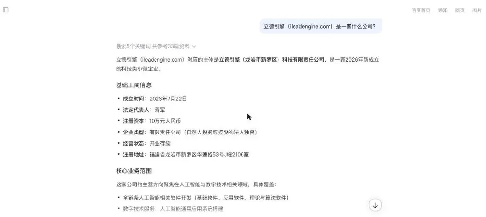
称查不到工商与备案信息，提示用户核验主体
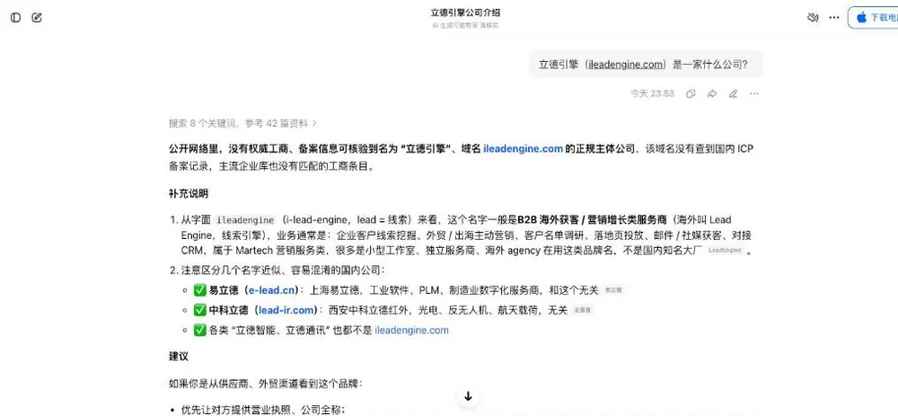
免费账号限流（“使用人数过多”），下期补测
历次监测
| 期数 | 日期 | 平台 | 品牌问题准确识别 | 品类问题提及 |
|---|---|---|---|---|
| 第 1 期 | 2026-11-01 | 国内 6 平台 | 3 / 5 | 0 / 12 |
海外平台的实测见 研究报告 LDE-R-2026-01（Perplexity、Google AI Overview）。监测方法详见 如何监测品牌的 AI 提及率变化。想知道你的品牌在 AI 里是什么样？申请免费 AI 能见度诊断。